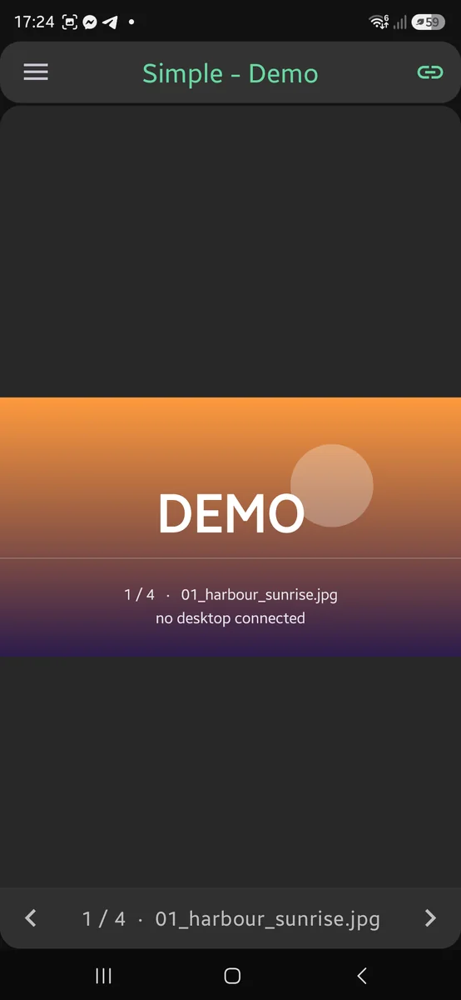

qIV Remote
What it looks like

1 / 10 — Simple — the picture and nothing else
What is on this page
- What it looks like
- The four screens
- Simple — the picture and nothing else
- Find any picture by typing part of its name
- Advanced — every command
- Watch — the photo-frame screen
- Stream — photos from the phone
- Settings
- Free and full editions
- Security and privacy
- Setting up the connection
The four screens
Every screen drives the same connection. They differ in how much of the phone they spend on controls, and each saved computer remembers which one it opens on — so the machine wired to the television and the one on your desk can behave differently.
Simple Free
The picture, edge to edge, with two arrows over it. For one hand, in a dark room, while something else has your attention.
Advanced Full
Every command the viewer accepts, one button each, with a live preview and the name and number of the file on screen.
Watch Full
That preview filling the display and nothing else. Read-only: it shows what the desktop shows and sends nothing that could change it.
Stream Full
Send a photo from the phone to the big screen. It appears once, over whatever is up, disturbing neither the folder nor a running slideshow.
Simple — the picture and nothing else
This is where most people will spend their time, so it spends almost nothing on itself. There is no button bar: the photograph fills the screen from the header to the navigation bar, and the only controls drawn on it are two arrows sharing one row with the file's name and number.
Swipe it in any of four directions Full
Nothing scrolls or zooms on this screen, so every direction is free to mean something.
| Gesture | What it does |
|---|---|
| Swipe left, or up | Next picture |
| Swipe right, or down | Previous picture |
| Two fingers, same directions | Jump to the last or first picture in the folder |
| Three fingers, any direction | Open Go to and type a number |
| Tap an arrow | Next or previous Free |
Left and up go forward because that is the direction a photo roll and a feed already move. If your hand expects the opposite, each axis has its own switch in Settings — they are separate because people invert one without wanting the other touched.
The two arrows are free, and they do everything the gestures do. The screen is completely usable without the unlock; the gestures are the shortcut.
Where things sit is yours to decide
Everything drawn over a photograph covers part of it, and which part matters depends entirely on the photographs. So the file name can sit between the arrows (sharing their row, costing the picture nothing extra), on the top edge, on the bottom edge, or nowhere at all. The arrows themselves sit low, centred, or off.
Find any picture by typing part of its name
0042, sunset, or a fragment from the middle of a name
all land. Use * and ? when you know the shape but not the
text.
A phone keyboard is the worst place in the world to type a thirty-character camera filename, and this is the feature that means you never have to. It also scales with the folder: among forty pictures, Next is fine; among four thousand, this is the only way to arrive somewhere on purpose.
There is no index to build and nothing to keep in sync — the desktop already holds the folder, so the match is instant and always current, even for a folder you opened a second ago.
Its partner is Go to #, which takes the picture's number. Out of range is refused rather than quietly rounded to the nearest legal one. Both are buttons on the Advanced screen, and Go to # is the three-finger swipe on Simple.
Advanced — every command
One button per command, grouped the way the viewer groups them, over an optional live preview of the desktop's screen. The buttons that represent a state — an effect, a window toggle, the slideshow — light up from what the viewer reports, not from what the phone last pressed, so they stay honest when someone changes something at the keyboard.
| Group | What is in it |
|---|---|
| Navigation | Previous, Next, First, Last, Go to #, Go to name, folder history, connected clients |
| Preview | Show the desktop's current picture, follow it live, and save the original to your gallery |
| Slideshow | Start and stop, pause and resume, loop, shuffle, and set the interval |
| Zoom | In, out, reset to the view mode's own fit |
| Transform | Rotate either way, flip horizontally or vertically |
| View mode | Fit, Width, Height, Fill, 1:1 |
| Effects | Grayscale, invert, sepia, and reset them |
| Window | Fullscreen, always-on-top, panels, the info overlay, show or hide the window, and move it to the next monitor |
Save writes the original file, byte for byte, into
Pictures/qIVRemote in your gallery — it asks the desktop for the
original separately rather than keeping the preview, because a re-encoded JPEG is
not the file you meant to keep. It needs no storage permission.
Watch — the photo-frame screen
The picture from the desktop, filling the display, with no toolbar and no buttons. Put a phone on a stand or prop up the tablet with the cracked case, start a slideshow on the PC, and it follows picture for picture for as long as you leave it.
It sends nothing back. Watch is read-only by design — it observes and issues no command that could change what anyone else is looking at.
How the picture meets the screen is a setting, and separately for each orientation, because the answer genuinely differs: turned sideways a wide photograph nearly matches the display and cropping costs a sliver, while upright the same photograph is the wrong shape entirely and cropping would cut off its ends. Choose keep the shape, fill by cropping, or stretch — for each of portrait and landscape.
Stream — photos from the phone
The direction a remote control usually cannot go at all. Pick photos with Android's own picker and push them to the desktop: the app never gets access to your gallery, and the PC never needs to reach your phone's storage.
A pushed photo appears once, over whatever is up. It changes no folder, no sort order and no playlist position, and a running slideshow keeps running with the photo occupying a single slide. Nothing has to be paused first and nothing is left behind.
Pick several and Stream will drive them as a slideshow of its own, from the phone, with its own interval, loop and shuffle — independent of whatever the desktop's own slideshow is doing.
Settings
Grouped by the screen each setting belongs to, so a preference that applies to one screen is never mistaken for an app-wide rule.
- This device — the name the app announces to a server, so the PC can show which phone is connected.
- Appearance — light, dark, or follow the system.
- Control screens — keep the screen awake while a remote is open, and vibrate on press.
- Servers — which screen new servers open on, and forget every saved password in one action.
- Simple screen — where the file name sits, where the arrows sit, and which way each swipe axis runs.
- Advanced screen — where the file name sits over the preview.
- Watch screen — how the picture fills the display, separately for portrait and landscape.
- Preview — the size and JPEG quality asked of the desktop, which is the trade between sharpness and speed on a slow network.
- Stream screen — send only over Wi-Fi, and whether the server's own preview is shown beside the phone's.
Restore defaults puts every setting back to how the app shipped and forgets every saved password, without touching the servers themselves.
Free and full editions
One app, one optional one-time unlock. Everything that keeps the connection private is in the free edition and always will be — security is not a paid feature.
| Free | Full | |
|---|---|---|
| Simple remote, with its two arrows | ✅ | ✅ |
| TLS, certificate pinning, password authentication | ✅ | ✅ |
| Saved servers | One | As many as you like |
| Swipe gestures on Simple | ❌ | ✅ |
| Advanced remote | ❌ | ✅ |
| Watch | ❌ | ✅ |
| Stream | ❌ | ✅ |
| Save pictures to your gallery | ❌ | ✅ |
Demo mode is always unlocked, and it is the try-before-you-buy: it runs every screen, including the paid ones, against a viewer that does not exist. No setup, no network connection, and it never opens a socket.
Security and privacy
- Connections are encrypted with TLS 1.3 or 1.2. Nothing older is offered, so the connection cannot be talked down to a weaker one.
- The server's certificate is pinned: the app connects only to a certificate you were shown and accepted, and warns you if one ever changes.
- Your password proves who you are without being sent in the clear.
- Commands that would alter files — delete, move, save — cannot be sent over the network at all. The desktop refuses them by design, not by setting.
- The desktop's own AllowList decides which devices may connect in the first place.
The app asks for no permission that can read your files, your location, your contacts or your identity. It uses the internet to reach the computer you typed in, checks whether you are on Wi-Fi so Stream can stay off mobile data, and talks to Google Play only if you buy the unlock. No accounts, no analytics, no advertising, no crash reporting, no tracking identifiers. Read the full privacy policy.
Setting up the connection
In QuickImageViewer on the PC:
- Press F9 to open Local Server.
- Set Enable to On and choose a port.
- Set Bind address to
0.0.0.0to accept connections from the network. - Add the phone's IP address to the AllowList — entries are separated by a comma or a semicolon, never a space.
- Press Start, then Save to INI to keep it.
Then add the PC in the app's Servers screen. Nearly every connection problem is one of three things: Local Server switched off, the phone missing from the AllowList, or a firewall on the port. The app's own About screen walks through the same steps.